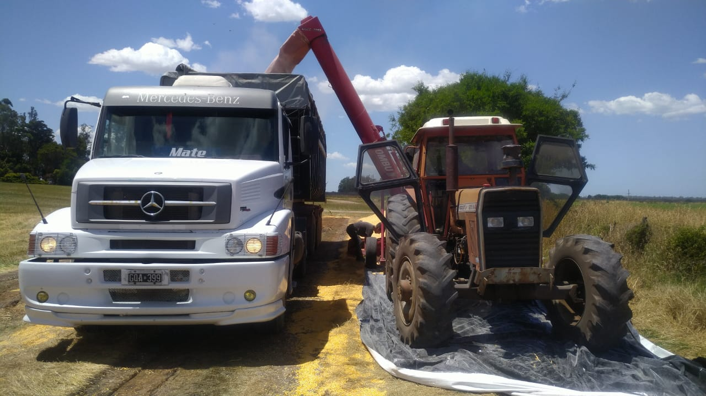

Nos dedicamos apasionadamente al transporte de cereales en grano, conectando el campo con el mundo y asegurando que cada cosecha llegue a su destino de manera segura y eficiente. En [Nombre de la Empresa], somos especialistas en logística agroindustrial, y nuestra misión es impulsar el crecimiento de la industria agrícola mediante un servicio de transporte confiable y de calidad.
Nuestra experiencia en el sector nos ha permitido entender las necesidades específicas de nuestros clientes, así como los desafíos que enfrenta la cadena de suministro de cereales. Es por eso que nos enorgullecemos de ofrecer soluciones a medida, diseñadas para optimizar el movimiento de cereales y garantizar la entrega puntual en cada trayecto.
Contamos con una moderna flota de vehículos especialmente acondicionados para el transporte de cereales en grano. Nuestros camiones y remolques están equipados con tecnología de vanguardia que asegura la conservación de la calidad de los cereales durante todo el trayecto. Además, nuestro equipo de conductores altamente capacitados y comprometidos con la seguridad se encarga de manejar la carga con el mayor cuidado y responsabilidad.
